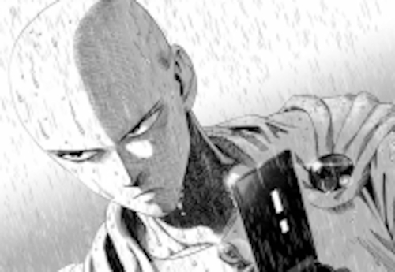
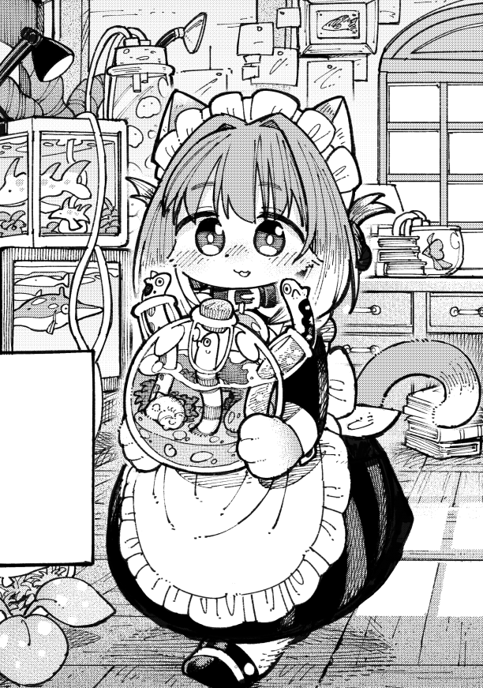
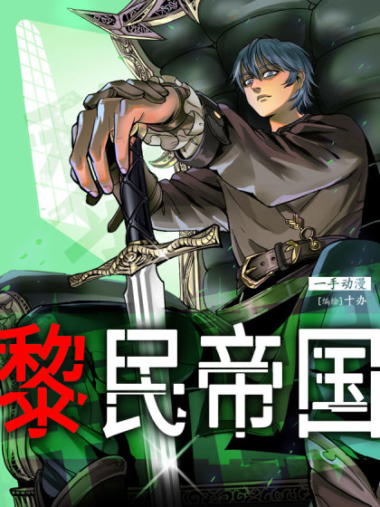

criado em 22/04/2021
Mangá, o possível anime
Os mangás fazem parte da bagagem cultural do Japão, e está presente no mundo inteiro! Me arrisco a dizer que graças a internet, ela teve uma grande propulsão, assim como a própria subcultura otaku.
Se lê o mangá da direita para a esquerda, que é uma das principais diferenças do Gibi. O mangá é muito mais que simples histórias, pode chegar a longas sagas e posteriormente, se tornar um anime!
Muito Mangá
Neste site aqui, encontrei uma enorme variedade de conteúdo do tipo. Famosos não famosos e até coloridos.
Para um bom começo, selecionei este, o “Sorajirou’s Untitled Cat Maid” que é de comédia, fala sobre uma gatinha que sabe falar.
A leitura é curta mas é encantadora, não sei bem explicar como os autores conseguem, mas deixa aquele gostinho e eu quero consumir mais! Embora não seja tão fácil a leitura por causa daquela regra de ler da direita para a esquerda.
Essa gatinha deixa sua dona intrigada, pois ela fala sim! “Fala”, mas frases curtas e terminadas com uma palavrinha em todas elas, então a dona vai em busca de descobrir o que significa e não liga muito pra o quanto desajeitada a gatinha seja e sim, ela é empregada doméstica.

Eu disse que havia vários tipos, certo? Há muito o que explorar por aqui
Eu não tenho intenção de contar nada sobre a história, só a minha experiência mesmo. Aqui é o lugar que você visita as altas horas para ler coisas que tenho que contar, sabe?
No dia em que criei este post tinha alguns capítulos, confira se já tá completo agora.
Por falar nisso, vamos para outro mangá, volto a falar deste futuramente!
Idade Média
A última coisa que eu esperava encontrar seria este mangá, que conta a história deste sortudo que recebe uma bola mágica em seu quarto. Já imaginou estar tranquilo em seu quarto e de repente uma coisa entra pela janela e abre um portal do nada?

A história é bem interessante, já que o protagonista é universitário e está começando a se virar sozinho, ser independênte. Ele encontra um novo mundo pelo portal e logo pensa fazer o que? É óbvio que se estando na Idade Média no feudalismo você vai pensar em empreender, negociar tempero com o povo da época, pelo menos é o que o garotão pensou.
Acho bom conferiri os novos capítulos, quando verifiquei pra escrever o artigo hávia poucos, talvez tenha muitos agora. Quer saber mais? Veja aqui.
Vida escolar
Neste manga é contada a história de um casal de estudantes, sendo que a menina tem uma especie de resposta quando está nervosa.

Até gostaria de falar mais, infelizmente só havia um capitulo na época em que escrevi este artigo… Talvez haja bem mais, confira clicando aqui.